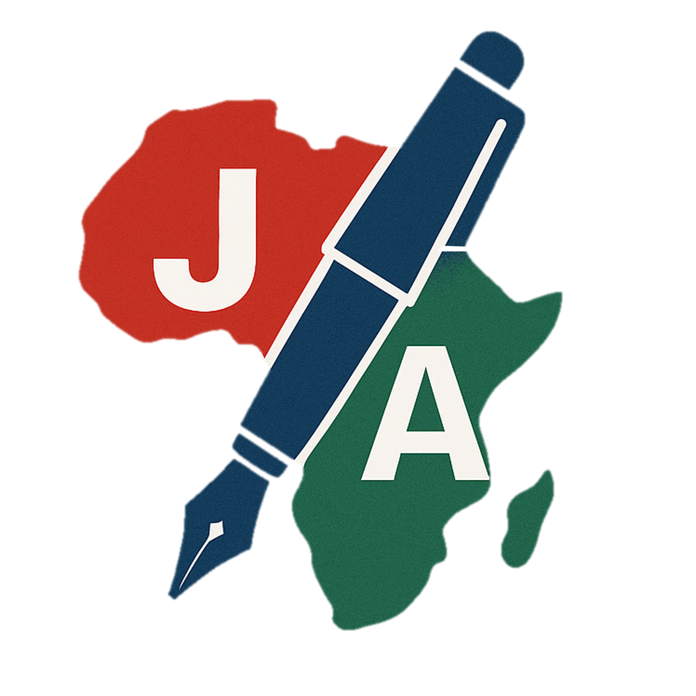

A blank, editable starting point for a post-lesson report — fill it in after you've taught the lesson. Download it, fill it in, then upload the completed file from your Staff Dashboard's Lesson Report tab. If your admin has already created a template specific to your subject, use that instead — it'll show on your Staff Dashboard's Lesson Report tab too.